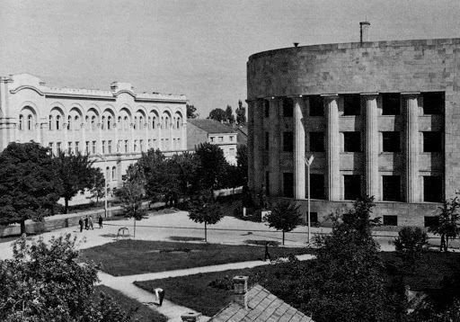
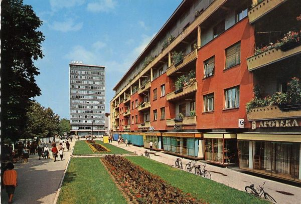
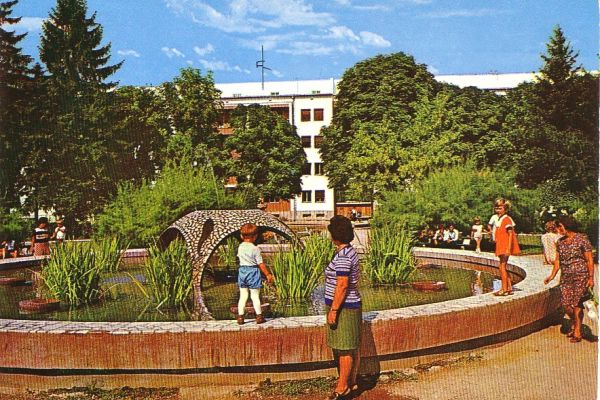
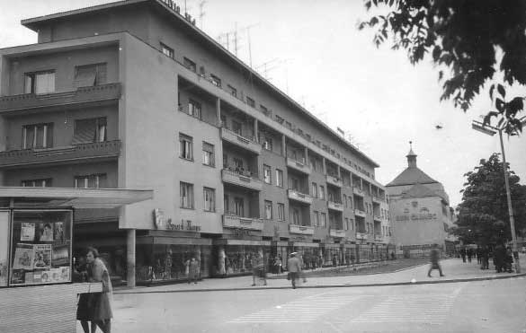
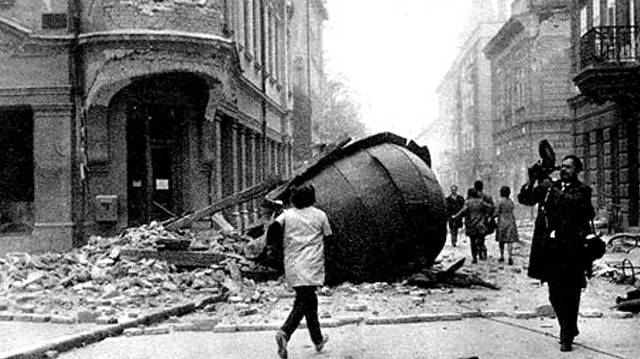

Banja Luka ist mit rund 200.000 Einwohnern die zweitgrößte Stadt Bosnien-Herzegowinas und befindet sich im Gebiet von Bosanska Krajina im Nordwesten des Landes. Vor den Osmanen gehörte Banja Luka zur Provinz (župa) Vrbas des Königreichs Bosnien und wurde von den Osmanen nach der Schlacht bei Mohác im Jahre 1528 erobert. Die Stadt wurde von Osmanen ausgebaut und diente vorerst als bedeutende militärische Grenzfestung und als Truppenstützpunkt mit wichtigen Verwaltungsämtern. Als Bosnien-Herzegowina den Status des Eyalets (Paschalik Bosnien, ab 1580) innerhalb des Osmanischen Reiches bekam, wurde Banja Luka zum Verwaltungszentrum und dem Sitz des Beglerbegs (Beylerbeys) erhoben (bis 1639). Für den Ausbau der Stadt in dieser Epoche waren die frommen Stiftungen von Sofi Mehmed-Pascha und Ferhad-Pascha Sokolović von großer Bedeutung. Als Grenzstadt war Banja Luka ständig von Kriegen betroffen und wurde mehrmals in Brand gesetzt bzw. großteils vernichtet.
Im Jahre 1878 wurde die Stadt von österreichisch-ungarischen Truppen besetzt und gehörte bis zum Ende des Ersten Weltkriegs zur Doppelmonarchie. In diese Phase wurde die Industrialisierung, die bereits von den Trappisten eingeleitet worden war, weiterentwickelt und die Stadt nach europäischen Standards ausgebaut. Im Jahre 1881 wurde Banja Luka zum katholischen Bistum erhoben, 1900 zum Sitz des orthodoxen Metropoliten und 1910 zum Sitz des Großmufti bzw. Reisu-l-ulema.
Einheimische sephardische und zugewanderte aschkenasische Juden haben viel zur Modernisierung und Entwicklung Banja Lukas beigetragen. Zur Zeit des Ersten Jugoslawiens war Banja Luka der Verwaltungssitz der Banschaft Vrbas. Im Zweiten Weltkrieg wurde die Stadt von der deutschen Luftwaffe zerstört. Im Zweiten Jugoslawien beherbergte Banja Luka zahlreiche Fabriken und war eine der wichtigsten Industriestädte des Landes.
Im Jahre 1969 wurde Banja Luka durch ein großes Erdbeben stark zerstört. Während der 1990er Jahre, obzwar vom Krieg nicht betroffen, wurden in Banja Luka und Umgebung nahezu alle römisch-katholische Kirchen und alle Moscheen von serbischen Extremisten vernichtet. Die von der damaligen politischen Elite konsequent und überlegt durchgeführte ethnische Säuberung hat das demographische Bild der Stadt nachhaltig verändert.